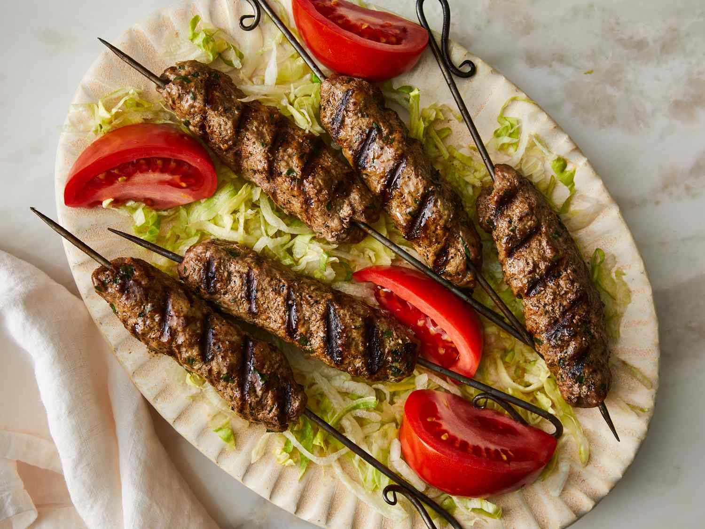

Kofta Kebab

Description
Kofta kebabs are made with ground lamb that's seasoned with garlic and six different kinds of spices, then molded onto skewers and cooked on the grill.
They are very good! Serve with yogurt, flatbread, lettuce, tomato, and cucumber.
Ingredients
The ingredients include minced garlic, kosher salt, ground lamb, grated onion, chopped fresh parsley, and a blend of spices such as ground coriander, cumin, cinnamon, allspice, cayenne pepper, ginger, and black pepper, along with soaked bamboo skewers.
- Garlic: 4 cloves garlic, minced
- Salt:1 teaspoon kosher salt
- Lamb:1 pound ground lamb
- Onion:3 tablespoons grated onion
- Parsley:3 tablespoons chopped fresh parsley
- Coriander:1 tablespoon ground coriander
- Cumin:1 teaspoon ground cumin
- Cinnamon:1 teaspoon ground cumin
- Allspice:½ teaspoon ground allspice
- Cayenne Pepper:¼ teaspoon cayenne pepper
- Ginger:¼ teaspoon ground ginger
- Black Pepper:¼ teaspoon ground black pepper
- Bamboo Skewers:28 bamboo skewers, soaked in water for 30 minutes
Steps
- Mash garlic into a paste with salt using a mortar and pestle or the flat side of a chef's knife on your cutting board.
- Mix garlic into lamb with onion, parsley, coriander, cumin, cinnamon, allspice, cayenne pepper, ginger, and pepper in a mixing bowl until well blended.
- Form mixture into 28 balls. Form each ball around the tip of a skewer, flattening it into a 2-inch oval; repeat with remaining skewers. Place kebabs onto a baking sheet, cover, and refrigerate for at least 30 minutes, or up to 12 hours.
- Preheat an outdoor grill for medium heat and lightly oil the grate.
- Cook skewers on the preheated grill, turning occasionally, until browned and cooked through, about 5 to 6 minutes. An instant-read thermometer inserted into the center of a kebab should read at least 145 degrees F (63 degrees C).
- Serve hot and enjoy!
Home